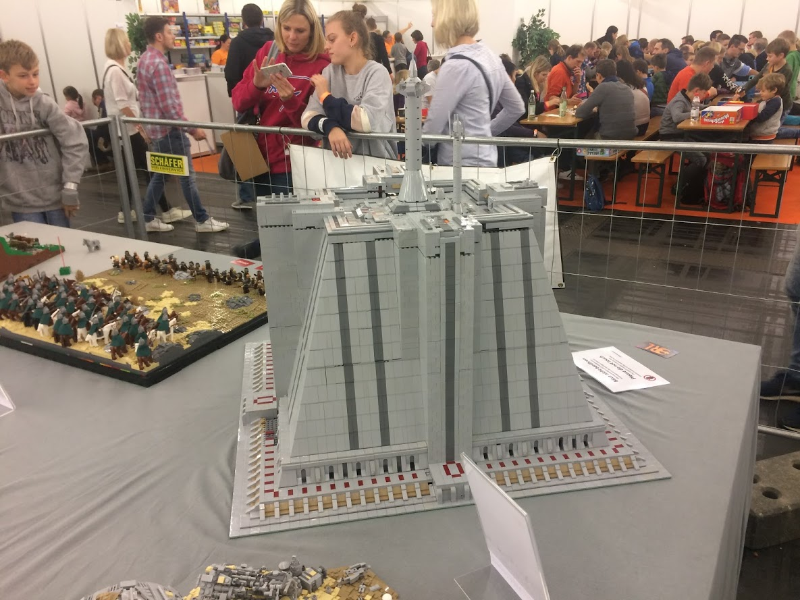
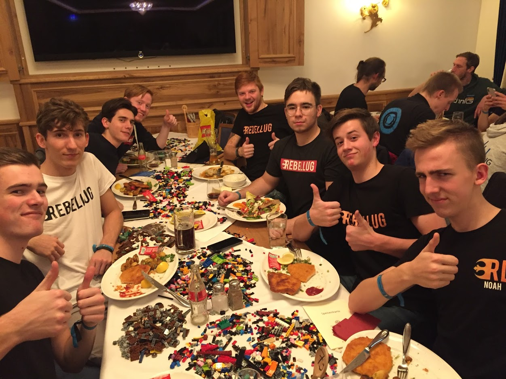
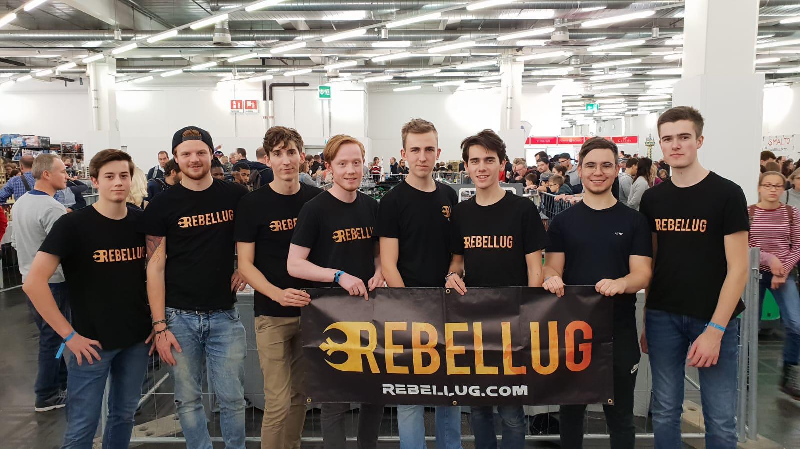

Bricking Bavaria 2018 Recap
Bricking Bavaria 2018, the biggest RebelLUG meetup in Europe to date
12/11/18
My journey began Wednesday evening, as I flew in from Schiphol to Munich with two packed suitcases filled with Lego. I was picked up by h2brick (Noah), who was hosting me for the first two nights. When we got to his place I opened my suitcases to find my 2 baseplate MOC pretty much annihilated. And so the 5 hour long progress of rebuilding began.
The next day the convention center (which in an amazing twist of fate is called the MOC) was open for displayers to set up. First_Order_Lego (Luke) had arrived that morning by bus, and the three of us went to set up and continue the reconstruction efforts. Later that day, TWC Productions (Julius) arrived at the train station. We had never actually met him before, so finding him took us walking along the platform with the RebelLUG banner raised high. The MOC he brought, an amazing 3x3 green baseplate Jedi Temple, was in an even worse shape than my MOC had been. We headed back to the center to start rebuilding, with half of our huge table still awfully empty.
The day started off with a speech from Thomas Nickolaus, the main organizer of the event. He welcomed us all to Bricking Bavaria 2018, before presenting us with a free-for-all-pick-a-brick. Just like last year, tables full of bricks were laid out, and we were allowed to take whatever parts we wanted. It was of course encouraged to pay a bit of money for the bricks to help organize the event next year. I have to say, one of the best things besides meeting LUG members and seeing each other’s builds IRL, it has to be the crazy amount of bricks you end up leaving the convention with. Over the course of the day, the remaining four members arrived. Norlego (Olav) and northernlego (Aasmund) had actually arrived by plane the night before and were being hosted by Trisbricks (Tristan). We picked YR Bricks (Yannis) and finally CDL Studios (Victor) up from the train station. Victor, just like last year, arriving last, and with no MOC. He just kinda came to hang out and sell his customs. As the visitors were lined up outside, Olav and Aasmund were busy setting up their builds. All of the new arrivals were too late for the brick picking, but there were plenty of other games and little contests to enjoy. Like last year there were plenty of fun activities for all of us to participate in. We’d get sets, with which we would need to do a build challenge such as building blind or building while one person reads the instructions and the other builds. There were also more creative contests, like the 101 bricks challenge. You’d assemble 101 of your own bricks before the game starts, then each round you’d have to build something new with those bricks, like sunglasses or a submarine. These games are another reason my suitcases were a few kilograms heavier of departure. Friday night Noah, Luke, Julius, Yannis, Victor and I headed for a hotel, while Olav and Aasmund would remain at Tristan’s house for the remainder of the nights.
On Saturday we slipped in to the convention hall a bit early to do some final work on the reconstruction of the Jedi Temple before the convention opened to the public. We then got some time to walk around and see the other creations people had brought. My favourite displays were probably the huge Rogue Bricks pirate collab, which took up most of their booth, Asoka’s Felucia MOC with its amazing plant life and the fully lit up Death Star Hanger that we also shared a table with. Later in the day we started the parts draft, which consisted of three Ninjago ships, which took about an hour just to sort and even longer to draft. That night we went to the AFOL dinner, which was a lot bigger and at a better venue than the year before. It was here that awards were given for the best builds, and Luke’s Jakku was nominated for best Sci-Fi. We were again overloaded with freebies and overall had a great time. Afterwards we headed back to the center and talked the guards into letting us in to do some photography while the halls were empty. Every time he asked us how long we were going to be, we just said “5 more minutes, just 5 more”. Which went on for a while, but eventually we had to leave and head for the hotel.
This was sadly my final day in Munich. We played some more games and finished up the draft. I would definitely not have minded to stay a few more days if it had been possible. It was so much fun to meet all these new members of RebelLUG for the first time and to see the old ones again. Because even if you don’t bring any MOC’s like Victor, just being there with the LUG is a great experience and really what it’s all about. We shared so many jokes and created in-group memes that we will be laughing about for the next year. That is why leaving was so hard. My plane back to Amsterdam left at eight, so I had to depart the convention just before the end. After unceremoniously dumping my build back into the suitcase I said my goodbyes and was off. Last year was really good, this year was great. Thanks again to Noah for hosting, to all the European members who were there and to the organizers of Bricking Bavaria 2018.
